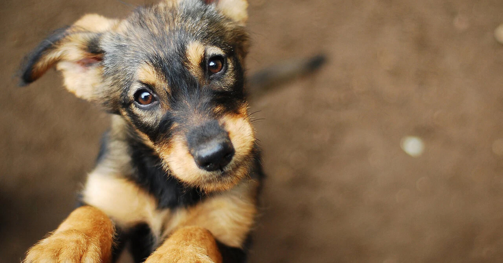
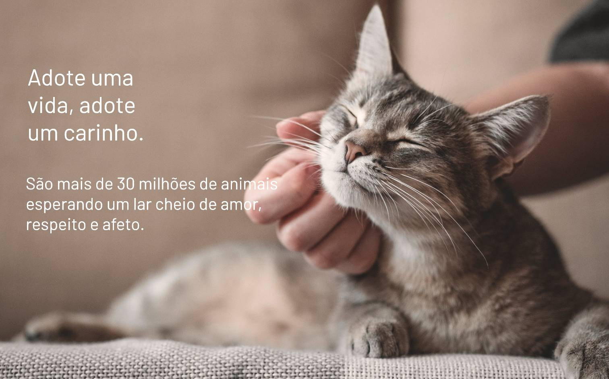
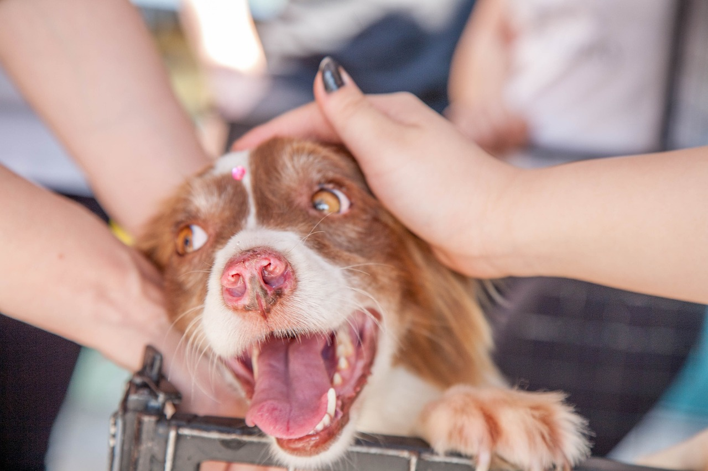
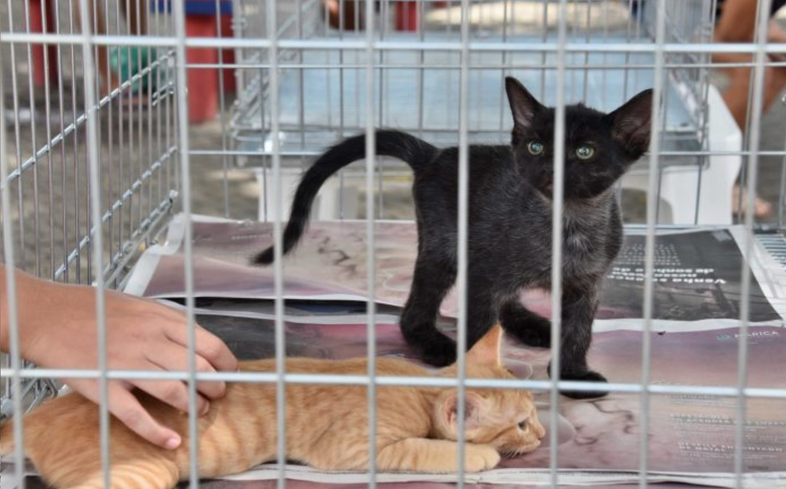
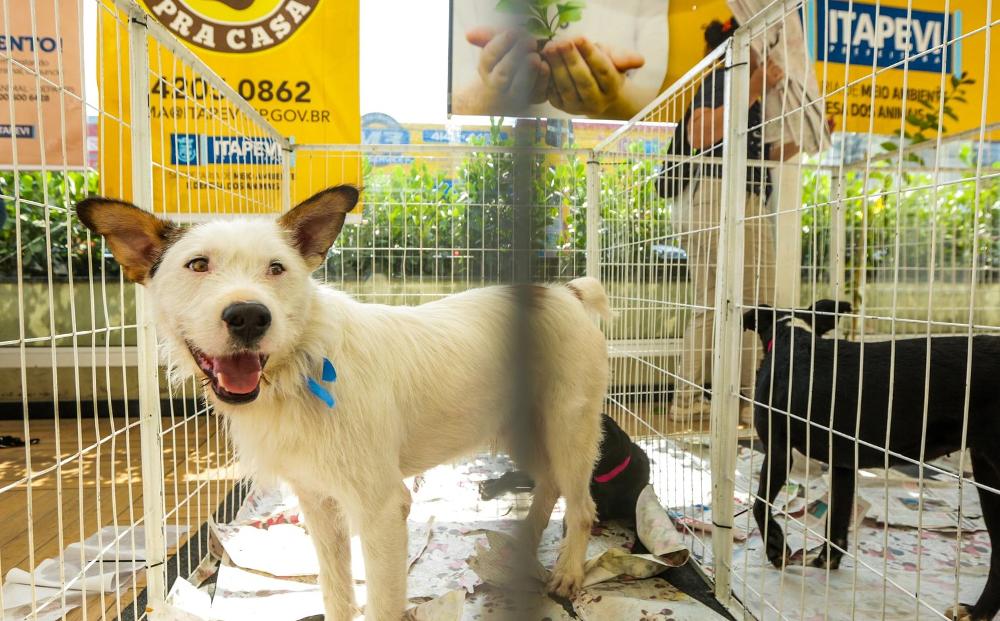

To Adopt
Home
|
Login
|
Cadastro

Amor de verdade
não se compra,
se encontra.
Conhça a To Adopt
Nós fazemos a conexão entre quem deseja adotar um pet com uma rede de mais de 123 ONGs e protetores parceiros.
Juntos somos mais fortes!
1 / 4

2 / 4

3 / 4

4/ 4

❮
❯
Qual pet você seria?
Ver Resultado
Nossos parceiros